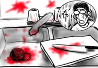
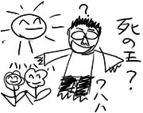

先週の話。Toddが、母親の家の裏にいっぱい生っているから、と言ってザクロ(pomegranate)をくれました。お礼に「日本ホラー話の中では、ザクロはよく人肉の例えで使われる」と教えておきました。「そんな話、初めて聞いた」と驚いていました。ほんと僕は余計なことばかりしてるな。
とは言え、実際にザクロを手にしたのは実はこれが初めてなのでした。へぇ、これがザクロかぁ。
さっそく日曜の昼下がりに食べてみることにしました。まずは皮を剥がしやすくするために、ヘタの部分を包丁で切り落とします。ストンと包丁がまな板に当たった後、ツーっと赤黒い液体が流れ出て来ました。
切り口からは、びっしりと詰まった小さい実がその赤黒い肌をのぞかせています。まるで筋肉繊維のようだ、と思いました。ゆっくりと切り込みを入れて、慎重に皮を剥がしていきます。ちょっとでも握った手に力を入れすぎると、ザクロは切り口からブシュッと赤黒い液体をほとばしらせるからです。
ほとんど皮を剥がし終わり、今度はびっしり詰まった赤黒い実を一つずつ取り出していきます。うっかり潰してしまった実の体液が手にまとわりつき、ヌメヌメと滑るため、とうとう僕はザクロを取り落としてしまいました。手から滑り落ちたザクロは流しへとゆっくり落下していきます。ぐしゃり。ザクロはいとも簡単に潰れ、流しに鮮血をまき散らせてゴロリと転がり、って、ああもう！ほんと怖いな、このフルーツ！
やってるうちに手慣れてきたので、それ以降は順調に実を取り終えることができました。やれやれと一息ついて目線を上げると、キッチンの白い壁に、飛び散った赤黒い液体が不気味な絵を描いていたのでした。ギャー！

あ、実は甘酸っぱくて、噛むと種がプチプチ言って結構いけますね(あっさり終)。
帰ってポストを覗くと、Police Officeからの手紙が届いていました。先日の最後でオービスが光った気がしてたけど、やっぱりそうだったのかな、一体どれくらい罰金取られるんだろう、としょんぼりしながら開封しました：
やぁ、フレンド！
僕たちはPolice Officers' Associationだよ。僕たちは君たちのサポートを本当に必要としてるんだ。君たちから送ってもらった基金は、僕たちPolice Officers' Associationメンバや、僕たちがサポートしているグループの活動のために本当に役立っているんだよ。いつだって心付けは大歓迎さ。おっと、同封した"We support police officers' Association"デカールはフリーだよ、どうか受け取ってほしい。(意訳)
全然違った！
この学校は死の王に支配されている。知っているのは僕たちだけだ。
教師は生きながらも死の王に仕える敵で、僕たちは教師達をやっつける。策を練り、不意をついて階段から突き落とす。
でも、死の王はやっつけた教師たちを黄泉の国から連れ戻して復活させる。戦いは泥沼状態へ。そんな中、死の王に操られながらも生徒を思い、味方になってくれる教師がいた。
僕たちは、死の王と直接対決することを決意する。
味方の教師の案内で、学校地下深く、死の国へと続く通路へ進入していく。人ひとりがやっと通れるくらいの狭いトンネルで、じめじめと薄暗くとても気持ち悪い。
トンネルを抜けると突然広い空間に出た。そこは死の国の駅といった感じで、屍鬼の駅員が改札口のところに立っている。
改札を出たあと、朝飯を食いながら、夜は駅前の居酒屋で北海道ビール飲もうぜと話しているところで目が覚めた。
後半グダグダだ。死の王どうなったよ！
